Reactive Streams
The Now
ScalaDays 2015-06-10@Amsterdam
Mathias Doenitz
/
/
This presentation: http://spray.io/scaladays/2015/
Stream-based logic is all the rage
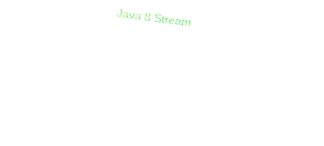 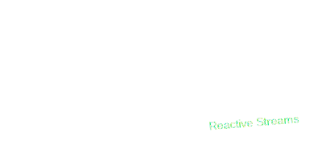 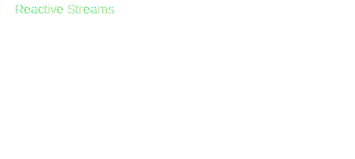 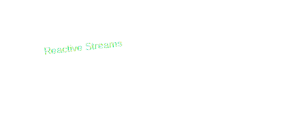 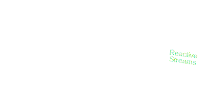 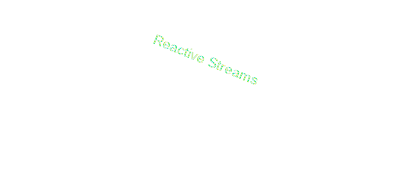
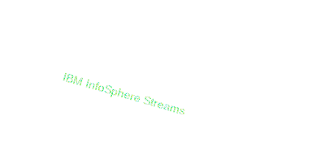
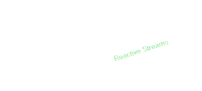
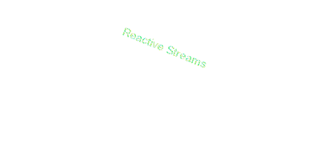
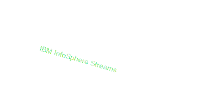
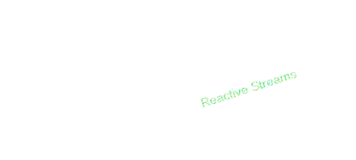
Why stream-based programming is cool
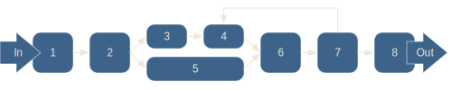- Intuitive, expressive and type-safe
- Scales well across levels of abstraction
- Well suited for today's (and tomorrow's) hardware
“Reactive Streams are the
hottest kid on the block”
Someone on the Internet
What Reactive Streams (RS) are
First and foremost:
Protocol
for efficiently passing data
between two independent units of execution
in an
RS defuse async boundaries
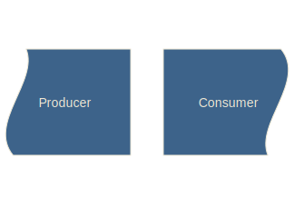  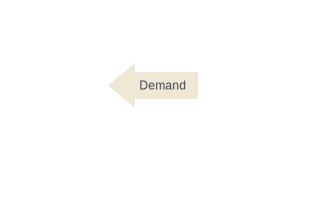 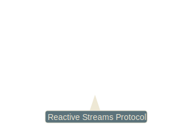 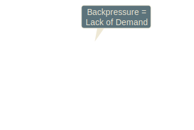 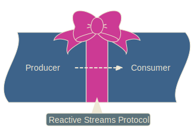Reactive Streams are contagious
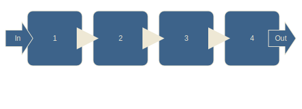 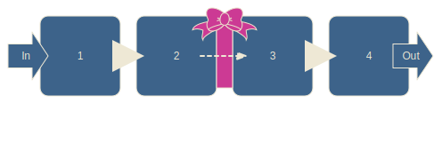 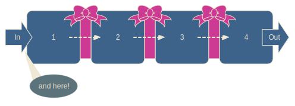RS can scale across the full stack
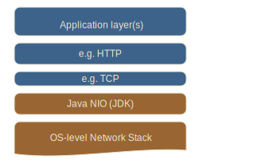  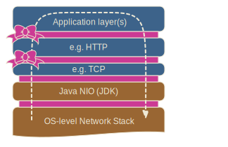 RS are more than a protocol
- Java interface definitions (i.e. a JAR to depend on)
- Growing number of implementations
- TCK (Technology Compatibility Kit)
- Nascent sub projects (net, io, js, ...)
- Public Domain (CC0) License
Reactive Stream Java API
public interface Publisher<T> {
public void subscribe(Subscriber<? super T> s);
}
public interface Subscription {
public void request(long n);
public void cancel();
}
public interface Subscriber<T> {
public void onSubscribe(Subscription s);
public void onNext(T t);
public void onError(Throwable t);
public void onComplete();
}
Not for user consumption!
(Use RS Impl Library instead)
RS Impl Landscape as of v1.0.0
 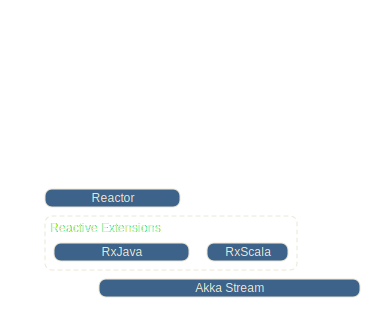 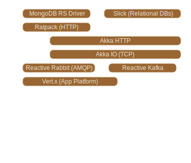Simple example: Monte Carlo Pie
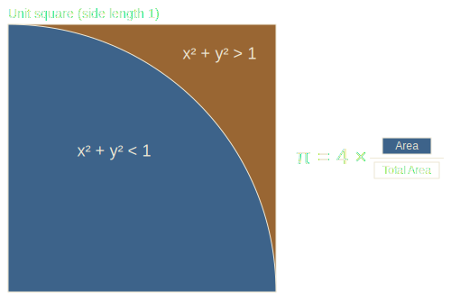"Complexified" example stream graph
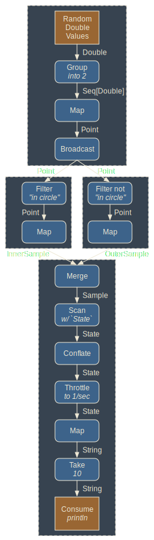
Akka Stream Implementation
[DEMO]
Akka Stream
- Built from scratch on Reactive Streams Protocol
- Java and Scala user APIs
- "Blueprint"-style abstractions (Sources, Flows, Sinks)
- Supports fully general stream-graphs
- Number of pre-defined transformations still somewhat small
- Not very optimized yet, still marked "experimental"
RxScala Implementation
[DEMO]
Reactive Extensions
- Mostly driven by Netflix Engineers
- Broke the ground for Reactive Streams
- Oldest, most known, most mature
- Support for many different languages
- Doesn't directly support RS yet,
currently still needs adapter lib - Backpressure not fully supported yet,
will do so in version 2.0
Reactor Implementation
[DEMO]
Reactor
- RS implementation built from scratch
- Java only
- Internally based a lot on Disruptor
- Focus: Performance
- Current version (2.0.3) not very mature yet
- Driven by Engineers from Pivotal
Roadmap
- RS Protocol and API V 1.0 done
- Evolve and tune existing implementations
- More infrastructure implementations!
- More domain adapters!
- Expand off the JVM (e.g. JavaScript)
- Explore sub-standards (TCP, IO, ...)
Resources
- Main sites & documentation:
http://www.reactive-streams.org/
http://akka.io/
http://reactivex.io/
http://projectreactor.io/ - Code from the talk:
https://github.com/sirthias/rs-comparison